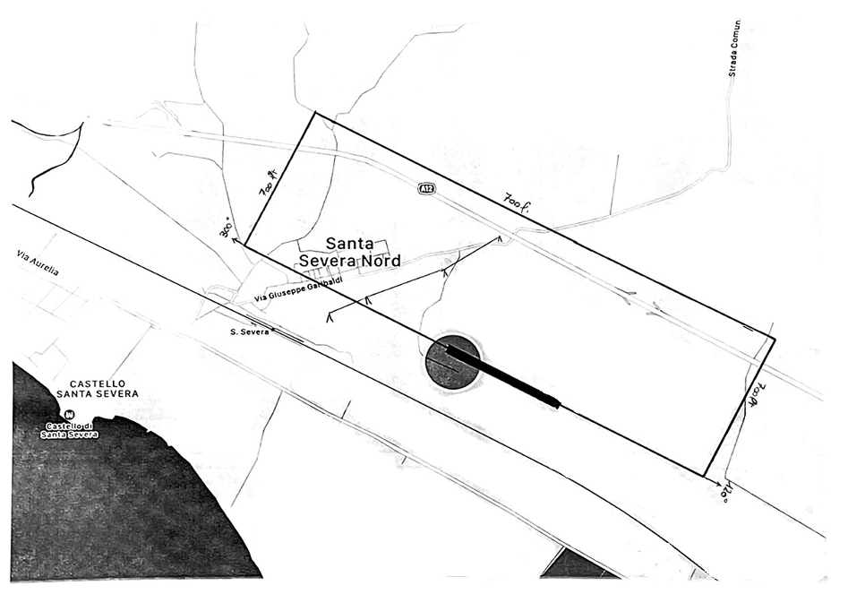

Per raggiungere l'aviosuperficie in volo:
Coordinate 42° 01' 04'' N 11° 59' 07'' E
QFU 12/30 Circuito sinistro per pista 12, destro per 30
elevazione campo 40 ft msl- circuito 700ft
Precauzioni
Il direttivo della "Aviogestioni Sportive ssd"
è particolarmente sensibile ed impegnato nel non arrecare
alcun disturbo al vicino abitato di Santa Severa Nord.
Evitare quindi il sorvolo dell'abitato a Nord-Ovest del campo seguendo il circuito indicato di seguito e nel finale per pista 12, porre attenzione alla presenza di una linea elettrica a circa 400 mt dalla testata pista 12.
Coordinate 42° 01' 04'' N 11° 59' 07'' E
QFU 12/30 Circuito sinistro per pista 12, destro per 30
elevazione campo 40 ft msl- circuito 700ft
Precauzioni
Il direttivo della "Aviogestioni Sportive ssd"
è particolarmente sensibile ed impegnato nel non arrecare
alcun disturbo al vicino abitato di Santa Severa Nord.
Evitare quindi il sorvolo dell'abitato a Nord-Ovest del campo seguendo il circuito indicato di seguito e nel finale per pista 12, porre attenzione alla presenza di una linea elettrica a circa 400 mt dalla testata pista 12.

Prestare inoltre attenzione al divieto di sorvolo della R.N.R. di Macchiatonda e delle zone
R14 A e B nonchè la P128 poste a Sud Est della struttura.
Nei periodi in cui si renda necessario, porre attenzione ad eventuali strutture di irrigazione poste sulle
vie di rullaggio.
Per raggiungerci via terra:
Autostrada A12 Uscita Santa Severa- Santa Marinella,
prendere la SS1 Aurelia in direzione Roma
uscita Santa Severa Nord e seguire la segnaletica.
Prendere visione della nota informativa, scaricare
il modulo di richiesta utilizzo ed inviarlo via mail all'aviosuperficie.
Autostrada A12 Uscita Santa Severa- Santa Marinella,
prendere la SS1 Aurelia in direzione Roma
uscita Santa Severa Nord e seguire la segnaletica.
Prendere visione della nota informativa, scaricare
il modulo di richiesta utilizzo ed inviarlo via mail all'aviosuperficie.